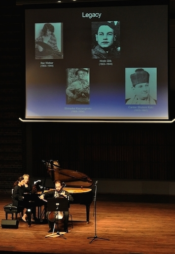

Description
• Combines music and historical material to engage audiences in Holocaust remembrance relevant to our current world
• Concerts feature Holocaust songs of resistance and survival from the ghettos, camps, and partisans, followed by a new cello sonata that integrates these songs
• Most often presented as a concert with an historical presentation or a pre-concert lecture
• Goals–engender remembrance to increase mutual understanding, tolerance, and respect
• Successful artistic and educational impact demonstrated by audience accolades and press coverage
• Produced in the Czech Republic, Poland, San Marino, Australia, New Zealand, Israel, and the US since 2015 launch
Components
• Public Concert: Holocaust source songs followed by Sherr’s Sonata for Cello and Piano–Mir zaynen do!, or cello recital with Sherr's sonata and mixed repertory
• Educational Presentation: Dr. Sherr's multimedia presentation integrated with the concert, or as a stand-alone or pre-concert lecture
• Student Concert for ages 11-18: an adapted and abbreviated version of the Public Concert, with multimedia presentation
• Online Educational Materials
Press Lectures
TV interview: A Conversation With - Laurence Sherr (includes commentary on Music of Resistance and Survival Project), 2015
TV story: Guarigione dal razzismo: musica contemporanea per voce (lirica) sola (Healing from Racism, preview of 2019 concert in the Republic of San Marino)
Radio interviews, including
• Upbeat–Laurence Sherr, Radio New Zealand, 2016
• KSU Composer Pens Music in Remembrance of Holocaust Victims, WABE-FM, 2015
• The Haunting Music of the Holocaust, Georgia Public Broadcasting, 2015
• Friday Live: Saint Paul First Friday Music And Art, 2015
Concert review
Middle C: Classical Music Reviews, Wellington, New Zealand, 2016
Concert previews
Giornale San Marino, 2019
TribunaPoliticaWeb, 2019
Libertas, 2019
|

|